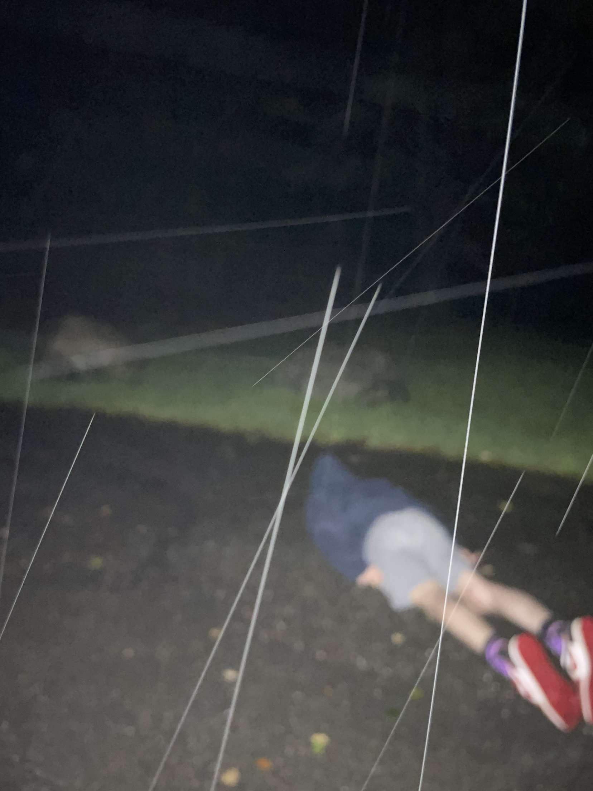

Hjem
Truls Iversen
Lene Olsen
Alex Dimopoulos
Marius Horni
Christoffer Staupe
Isak Galleberg
Hjem
Truls Iversen
Lene Olsen
Alex Dimopoulos
Marius Horni
Christoffer Staupe
Isak Galleberg

-Alex Dimopoulos
-Universitetet i Agder
-IT & informasjonssytemer
Jeg heter alex og er i gruppe 12A, gjennom faget IS-114 har jeg fått mange unike efraringer og har insett at progamerring var vanskeligere en forventet. Jeg vil si jeg er takknemlig at vi startet med pyret, fordi de andre programmerings språkene ble lettere å jobbe med. Mens på den andre siden fikk pyret meg til å grine meg til søvns, men jeg kom meg gjennom det på et vis.
når det gjelder mitt personlige klima utslipp dekker nok bil meste parten av utslippet mitt. fra december i fjor til 23 november har jeg totalt sett kjørt over 25 tusen km. når det gjelder andre kilder for utslipp vil jeg si at jeg ligger gjennomsitlig bilen jeg kjører driver på bensin og bruker rundt 6,7l per 100km

Bar-chart hentet fra ProgOblig2 etter ønsket fra oppgaven og har ikke noe samnheng med vår egen drøfting.